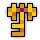
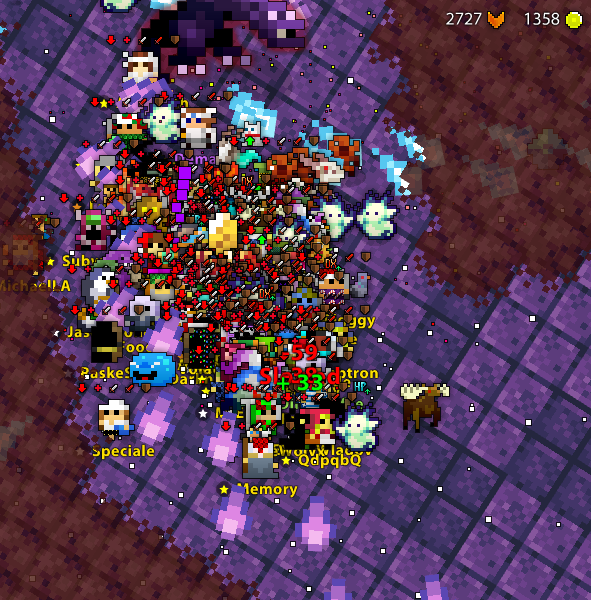
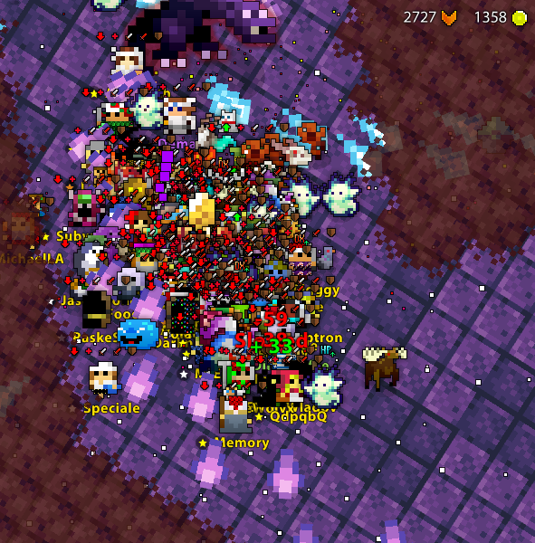
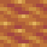
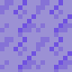
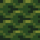
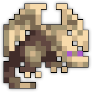
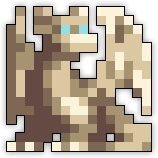
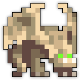

| Last updated: Exalt Version 5.13.0.0 (June 2025) |
|---|
 Teleportation Disabled Teleportation Disabled Music: Draconis Music: Draconis
|
| Dust Drops | ||
|---|---|---|
| 42-48 |
46-54 |
0 |
The Lair of Draconis is a high-level dungeon consisting of boss fights against five elemental dragons. It is a source of stat increase potions, untiered armors (Leaf Dragon Hide Armor, Water Dragon Silk Robe, Fire Dragon Battle Armor), the Celestial Blade, the Vision of Draconis, it also houses the artifact known as Ivory Heart, and the entire Dragon Tamer Warrior ST Set, Tidal Wave Kensei ST Set, Earthen Bulwark Summoner ST Set, and Storm Caller Bard ST Set.
The portal to Lair of Draconis has a chance to drop from Snapdragon, Hunter Dragonfly and Frost Dragon. It is also guaranteed to drop from Rock Dragon.
The dungeon was heavily reworked with Patch X.31.8.0 (July 2019). Information about the dungeon before the rework can be found here.
This dungeon must be completed to earn ‘Explosive Journey‘, ‘Conqueror of the Realm‘, ‘Hero of the Nexus’ and ‘Realm of the Mad God’ fame bonuses.
| The Realm Eye says: |
|---|

The Lair of Draconis was once the subject of fables, tales which told of four fearsome dragons made of stone and brought to life with forbidden enchantments. The dragons did exist in actuality, but they were not truly living as the fables described. Malphas had in fact created them many decades prior. When Oryx found the lair of these dragons, he deemed their soulless husks perfect test subjects for fusion with elemental sprites. |
|  | The Draconis Key is available in the Nexus for 200  and can also be found in certain Mystery Boxes. and can also be found in certain Mystery Boxes. |
The Lair of Draconis Guide is currently a work in progress.
The dungeon has a fixed layout consisting of five square rooms.
Every edge is getting its difference depending on which dragon goes first.
Upper left > Pyyr | Upper Right > Nikao | Bottom Left > Limoz | Bottom Right > Feargus
This is the layout for the four first dragons.
 

The Altar of Draconis is found in the center of the spawn room, surrounded by 4 HP-scaled statues of the elemental dragons. Players choose the dragon they wish to fight by attacking one of the statues, which will turn the other statues invincible and become a teleporter to that dragon’s boss room once sufficiently damaged. Note, however, that after the first dragon, the Altar can sometimes choose the next dragon at random. When a dragon is slain, its corpse will become a teleporter back to the boss room, where the next dragon can be fought. After all four dragons have been slain, the Altar of Draconis transforms into the Ivory Wyvern for one last confrontation.
The dungeon features an inheritance system with the dragons. Depending on the order of dragons killed, their battles will have significant changes made to them, so careful choosing is required to get an ideal combination. It is worth noting that the later a dragon is fought, the higher their drop rates will be to match their increased difficulty.
The below tables describes each specific inheritance pattern:
| Dragon (Color) | Order Defeated | Effect on Pyyr | Effect on Nikao | Effect on Limoz | Effect on Feargus | Effect on Ivory Wyvern |
|---|---|---|---|---|---|---|
| Pyyr (Red) | First | N/A | Water in arena becomes Scorching Water | Lava spawns in arena | Miasma takes a red tint and covers arena except for a small o-shaped region | Four square pools of Lava spawn in arena |
| Second | N/A | Nikao shoots armor-breaking shots | Limoz shoots armor-breaking and armor-piercing shots | Feargus shoots armor-breaking shots | Ivory shoots armor-breaking and armor-piercing shots | |
| Third | N/A | Minions shoot armor-piercing shots | Minions shoot armor-piercing shots | Minions shoot armor-breaking and armor-piercing shots | Red Dragon Orbs assist | |
| Fourth | N/A | N/A | N/A | N/A | Statue of Pyyr continually active | |
| Nikao (Blue) | First | Ring arena tiles become Ashes | N/A | Streaks of water spawn in arena | Miasma takes a blue tint; 5 square patches of miasma spawn in arena center in addition to miasma in edges | Four X-shaped pools of water spawn in arena |
| Second | Pyyr shoots a mix of boomerang, piercing, and slowing shots | N/A | Limoz shoots slowing shots | Feargus shoots slowing shots; some will move in a spiral direction | Ivory shoots boomerang and slowing shots | |
| Third | Minions shoot a slow-inflicting 3 bullet shotgun | N/A | Minion shots inflict slow | Minion shots inflict slow; Shades create a trail of tearing frost | Blue Dragon Orbs assist | |
| Fourth | N/A | N/A | N/A | N/A | Statue of Nikao continually active | |
| Limoz (Green) | First | Multiple rock clusters spawn in middle of arena | Water in arena becomes Mud | N/A | Miasma takes a green tint and covers arena except for a quatrefoil-shaped region; miasma clouds expand and contract in size in each “petal” of the quatrefoil | Multiple rock clusters in the arena |
| Second | Pyyr shoots large green and stone shots plus spinning shots that inflict sick | Nikao shoots sickening shots | N/A | Feargus shoots spinning green shots that inflict sick and piercing shots | Ivory shoots sickening shots | |
| Third | Minion shots inflict sick | Minion shots inflict sick on their second appearance | N/A | Minion shots inflict sick; Shades create a trail of green shots | Green Dragon Orbs assist | |
| Fourth | N/A | N/A | N/A | N/A | Statue of Limoz continually active | |
| Feargus (Black) | First | Four Shade Tornadoes spawn in arena | Water in arena becomes Icey Ice tiles | Numerous black rocks spawn in arena | N/A | Miasma spawns in edges of arena |
| Second | Pyyr spams pet-stasising shots | Nikao shoots pet-stasising shots | Limoz shoots pet-stasising shots | N/A | Ivory shoots purple shots; some shots inflict pet-stasis | |
| Third | Minion shots deal 120 damage | Minions shoot low damage boomerang shots | Minions shoot pet-stasising shots | N/A | Black Dragon Orbs assist | |
| Fourth | N/A | N/A | N/A | N/A | Statue of Feargus continually active |
|  Scorching Water (if Pyyr killed first) |
 Icey Ice (if Feargus was killed first) |
 Mud (if Limoz was killed first) |
|  Statue of Feargus |
 Statue of Pyyr |
 Statue of Nikao |
 Statue of Limoz |
Mirror Wyvern |
Dragon Orbs |
||
Note: All loot will drop in the central room when a dragon is killed.
The Lair of Draconis is part of the Mighty Quest pool from the Tinkerer and has two associated quests.
| Name | Description | Items Needed | Reward |
|---|---|---|---|
| The Elemental Wyvern | Defeat the Ivory Wyvern in the Lair of Draconis. |  |
|
| Lost and Found | People say some things are best left forgotten. I heartily disagree! |   |
Puri/Prot as well as boosts from Paladins or Warriors are recommended, especially for Limoz.
For a small group, you should fight Limoz>Pyyr>Nikao>Feargus or Nikao>Pyyr>Limoz>Feargus.
As a large organized group, it’s best to fight Feargus>Nikao>Pyyr>Limoz or Pyyr>Nikao>Limoz>Feargus or even Limoz>Nikao>Pyyr>Feargus.
It is recommended that you do not fight Pyyr as the last elemental dragon before fighting Ivory.
It is also worth considering that dragons fought later in the order will have higher drop rates so this should be taken into account when deciding.

Later Kabam-era Lair of Draconis and Ivory Wyvern portals. The current portal is the original design.
The Lair of Draconis is the most reworked dungeon in the game, with its development spanning more than six years.
Originally, the dungeon was meant to be more difficult than the Tomb of the Ancients, the most difficult dungeon at the time the Lair was conceived, and would drop the current dragon-themed UT armors as redesigned Tier 14 armors. During Release 11 (Feb 2013), the Lair of Draconis was accidentally put into production. The key was available for 10 or 20 fame in the nexus, and many players ran it, getting the t14 armors and UT Katana. In response, in a hotfix the day after, all existing Draconis keys were replaced with “Consolation of Draconis” keys, which placed you in a room where you kill a red balloon that dropped a random stat potion, while the existing Tier 14 armors and Celestial Blades were turned into Cheater Armors and Useless Katanas, respectively. During Release 12 (Mar 2013), all existing Consolation of Draconis keys were turned into Old Firecrackers. The Rock Dragon was released around this time but did not drop the Lair of Draconis because the dungeon remained unfinished, nor the Ray Katana, gaining a reputation for a dangerous event encounter that often prevented realms from closing, due to players being unwilling to fight it.
In Release 22.0.0 (June 2014), the dungeon finished development and the Ivory Wyvern was added as a final boss in “hard mode”, which only activates when Feargus is the first dragon to be fought. In this scenario, each dragon will have all their possible attacks. Due to the dungeon’s new status as a mid-level dungeon, the dragon armors were nerfed significantly and released as untiered items, while the Celestial Blade was renamed the Annoying Firecracker Katana and also nerfed. The dungeon was released for the first annual Month of the Mad God, to much player criticism due to the poor quality loot, low drop rates, tedious boss fights, and implementation of Test Chests instead of loot directly dropping from each boss.
In Patch 27.7.XMAS (Dec 2016), the Dragon Tamer ST Set was added as rare drops from the dungeon’s bosses.
In Patch 27.7.X10.3 (Feb 2017), the UT items that dropped from the dungeon were buffed significantly, and the Annoying Firecracker Katana was renamed to the Sullen Blade.
In Patch X.31.3.0 (Feb 2019), in response to player complaints over many years that the dungeon could be easily trolled by a player choosing another color aside from black at the start, the dungeon defaulted to “hard mode” regardless of which color was chosen first, meaning that the Ivory Wyvern fight became always accessible.
In Patch X.31.8.0 (July 2019), the dungeon was heavily reworked, with each boss and the dungeon art receiving a complete makeover. The main goal of the rework was to make each boss more engaging while better implementing the inheritance mechanic that was present during the original “easy mode” but irrelevant during “hard mode,” while keeping the Ivory Wyvern fight accessible regardless of which dragon order was selected. The Sullen Blade was renamed to the original Celestial Blade.
In Exalt Version 2.3.0.0 (Mar 2022), the Lair of Draconis, alongside the Mountain Temple, received a large QOL rework; in this case, mainly towards the bosses. The main goal was speeding up the fights with all bosses and buffing the loot from potions to greater potions as to make the dungeon more appealing to players. This rework was mainly a result of many players’ criticism of the dungeon’s poor drops and slow pace compared to other dungeons.
Before Exalt Version 2.3.0.0 (Mar 2022), this dungeon’s portal and associated key had the following sprites:
")
Before Exalt Version 5.11.0.0 (May 2025), dungeon completion gave 86-201  with 60% chance and 25-59
with 60% chance and 25-59  with 50% chance.
with 50% chance.
Before Exalt Version 5.12.0.0 (June 2025), dungeon completion gave 42-48  and 46-54
and 46-54  .
.
Before Exalt Version 5.13.0.0 (June 2025), dungeon completion gave 46-52  and 54-73
and 54-73  .
.


{kind=link}